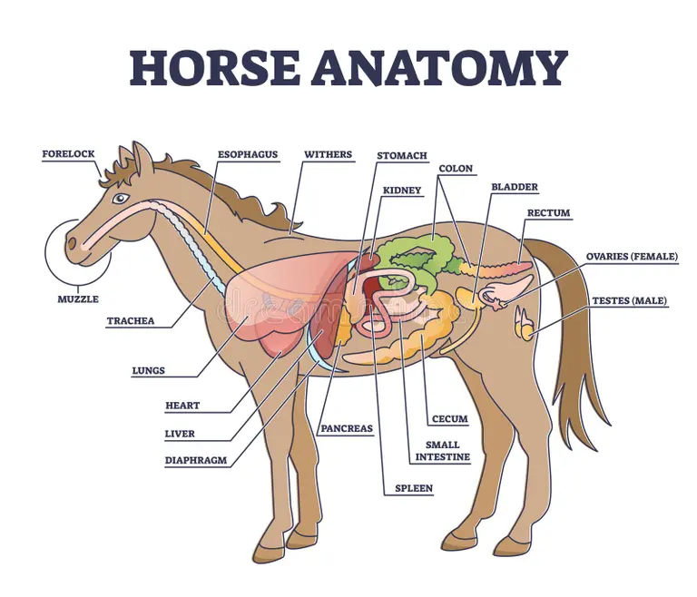

Animals are multicellular, eukaryotic organisms that consume organic matter for energy. They are essential for ecosystems as consumers, pollinators, decomposers, and contributors to biodiversity. Studying animals helps us understand behavior, physiology, and ecological balance.
Animal Organ Systems
Animals have complex organ systems that support life processes:
Digestive System: Breaks down food to provide energy and nutrients.
Respiratory System: Exchanges oxygen and carbon dioxide with the environment.
Circulatory System: Transports nutrients, gases, and waste products throughout the body.
Nervous System: Coordinates movement, senses, and responses to stimuli.
Reproductive System: Ensures species continuation through sexual or asexual reproduction.
Musculoskeletal System: Provides support, movement, and protection.

Diagram: Major Animal Organ Systems
Click the button below to watch the educational video about animal organ systems on YouTube.
Educational video explaining the animal organ systems in animals.
Animal Tissues
Animals are made of specialized tissues that perform different functions:
Epithelial Tissue: Covers body surfaces and organs, protecting them.